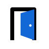

第三轮把“门”放回视觉中心：门廊是边界，开启是邀请，穿过是人与 Agent 的上下文接续。
拱形门廊与正在开启的蓝色门扇。直接、有记忆点，也保留进入未知空间的想象。

最直白的一扇半开的门，轮廓清楚，适合工具型产品。
双向开启强调人与 Agent 在同一个入口相遇。
门与首字母 D 合成一个符号，品牌专属性最强。
门框、门槛与向内的路径，强调跨过边界继续工作。
从稳定方形中切出门洞，最适合作为 App 图标与 favicon。